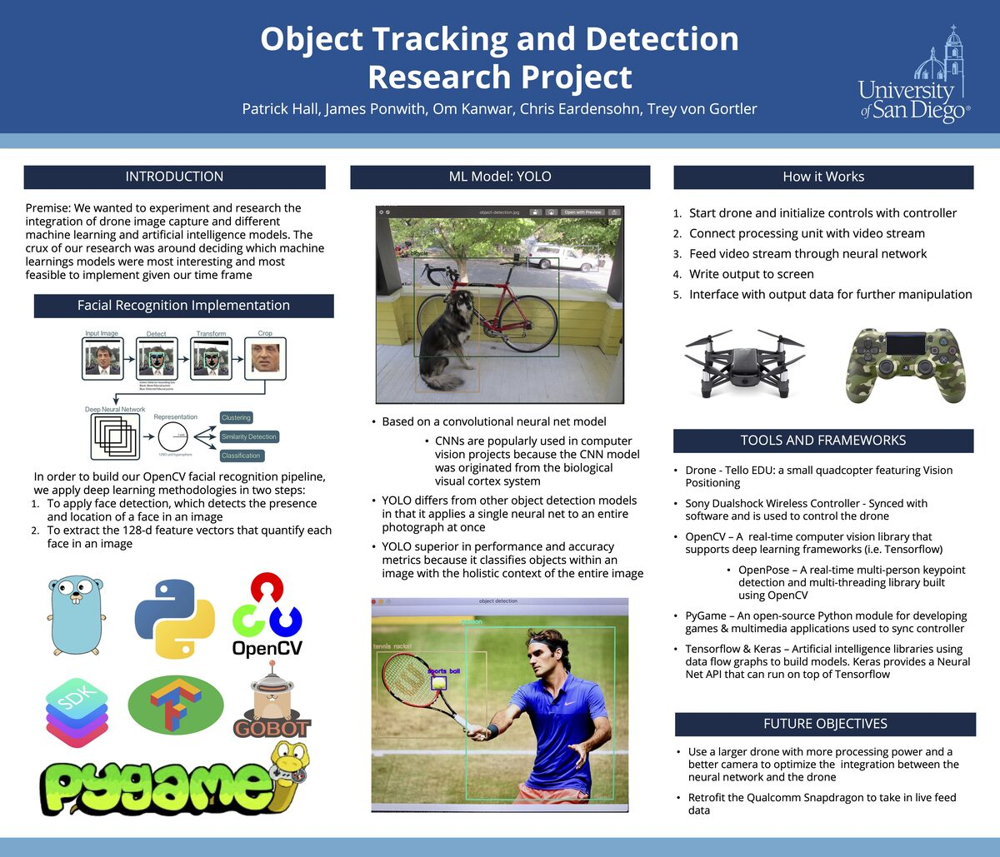

A Python control stack for the DJI Tello, using OpenCV and YOLO to track faces in real time and adjust the drone’s position based on a moving subject.

The project connects directly to the DJI Tello video stream, runs YOLO-based face detection via OpenCV, and then uses those detections to drive control signals. The drone attempts to keep a face centered in the frame by adjusting yaw, altitude, and distance.
This was a hands-on way to explore latency, feedback loops, and the difference between a model that “just detects” something and a full system that has to respond physically and safely.
Code: Face Tracker · Drone Object Detection